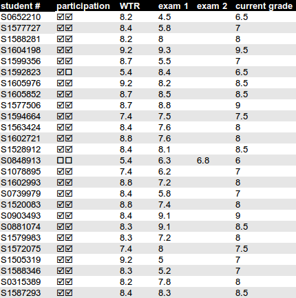

welcome to
|
▴ ▾ 1. Motivation• Now and into the foreseeable future, realizing new possibilities through technology may often involve the Internet – as a crucial infrastructure. Here, as with other computer-based endeavours, really to build new things will almost inevitably mean: to program. But where to start, and how to keep going? • Web Technology addresses this question – but not by requiring the completion of specific programming assignments: The student is expected to already have picked up programming skills elsewhere. • Instead, the student is first introduced to a tightly integrated set of fundamental subjects. This is coupled to enough concrete knowledge to be able to start building things her- or himself. A key goal here is to ensure that all students obtain a shared level of understanding, regardless of their prior (lack of) experience with web technologies. • The same approach is then applied to a few more advanced lecture subjects, and then to a further range of contemporary web technologies chosen by the students themselves. The emphasis here is on active research that is (1) driven by an attitude eager to build new things; and (2) based on careful evaluation with an open, scientific mindset. ▴ ▾ 2. Practical overview• Level: Web Technology is part of the curriculum of the Media Technology MSc programme at Leiden University. • Structure: The course consists of eight lecture sessions. Students form groups of three to report on a web technology of choice. The course is concluded by an exam covering the accumulated lecture sheets and study material. • Grading: The final grade usually is computed simply as (0.5 * grade-for-reporting + 0.5 * grade-for-exam). This may be lowered if an individual's attendance and participation were lacking. Points may also be added, for excellent work. ▴ ▾ 3. Lectures & presentationsAttendance is mandatory, especially at student presentations.
Lecture 1: Start-up
Lecture 2: The Internet: TCP/IP (part 1)
Lecture 3: The Internet: TCP/IP (part 2)
Lecture 4: The World Wide Web: HTTP & HTML
Lecture 5: Client/server programming: JavaScript & PHP
Lecture 6: Encrypted and anonymous communication (part 1)
Lecture 7: Encrypted and anonymous communication (part 2)
and
Web Technology Reports 1 - 4
Wednesday June 3, 10:00 ▴
Lecture 8: Web Technology Reports 5 - 9
▴ ▾ 4. Exam
Exam:
Wednesday June 17, 14:00 - 17:00.
▴ 5. Grading |
|
|